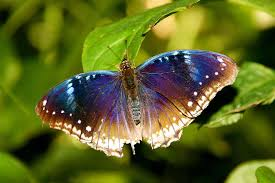

La mariposa es asombrosa porque su belleza es innegable, y su diversidad es asombrosa.Cada especie de mariposa presenta un conjunto único de colores y patrones que no solo les confieren belleza, sino que también cumplen funciones vitales para su supervivencia.
Los colores de las mariposas no son meramente decorativos; en muchos casos, actúan como mecanismos de defensa. Además de su función defensiva, los colores de las mariposas juegan un papel crucial en su comunicación y reproducción.
Las alas de las mariposas son una de sus características más distintivas y fascinantes. Aunque a simple vista parecen sólidas y coloridas, en realidad son transparentes. Están cubiertas por diminutas escamas que reflejan la luz, creando los impresionantes patrones de colores que observamos.
